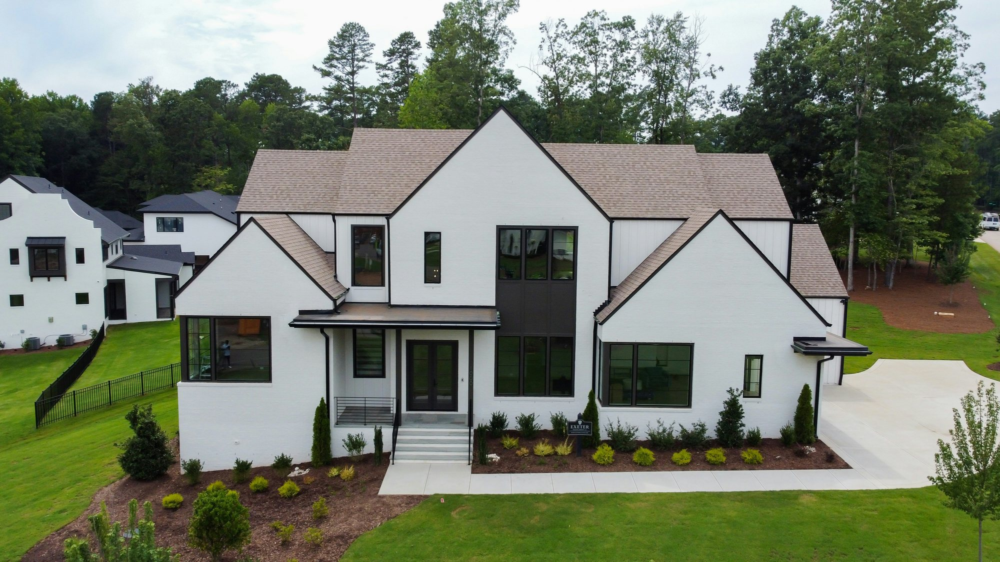
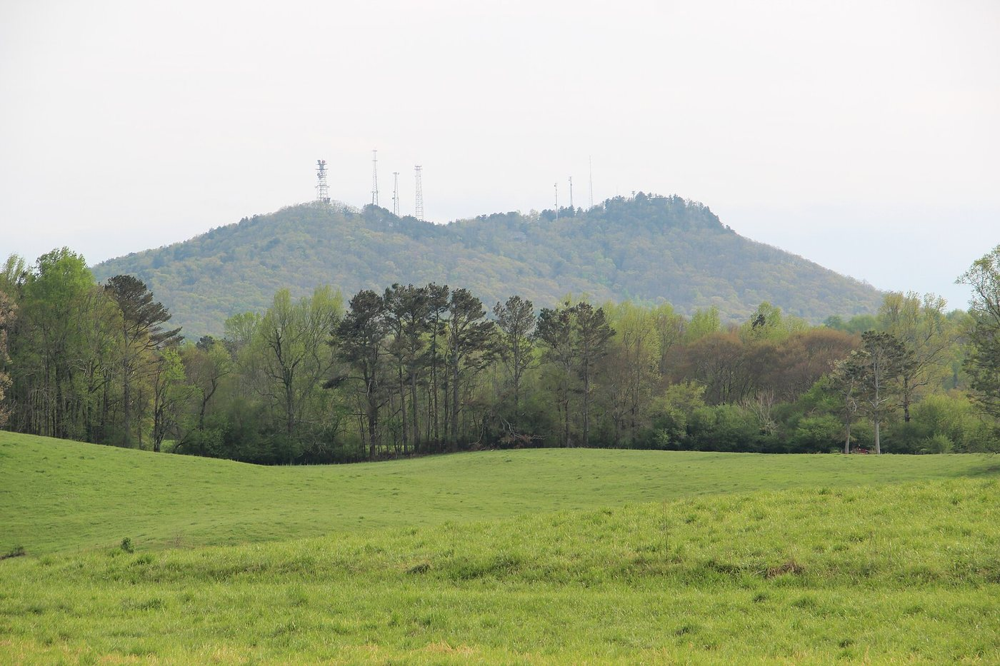
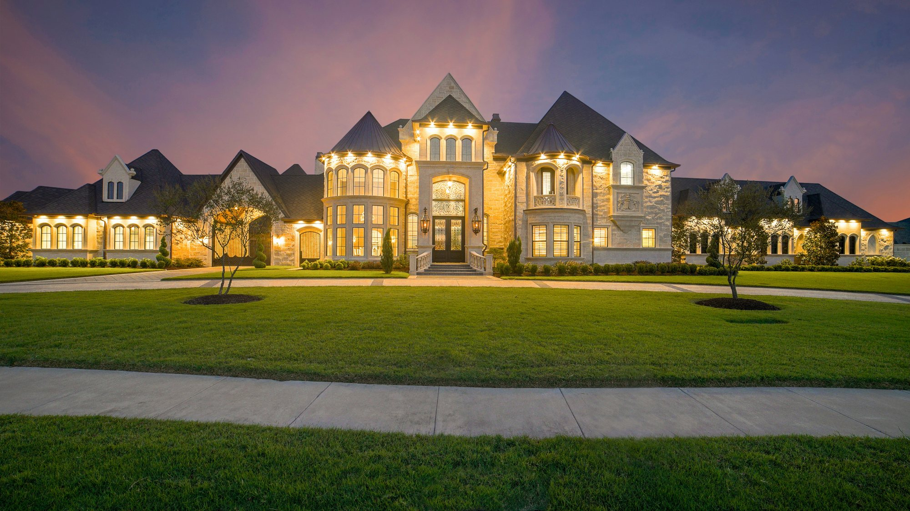
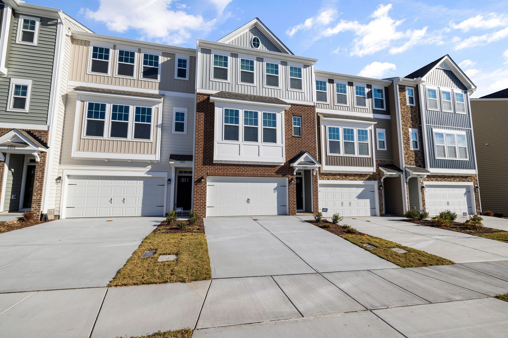
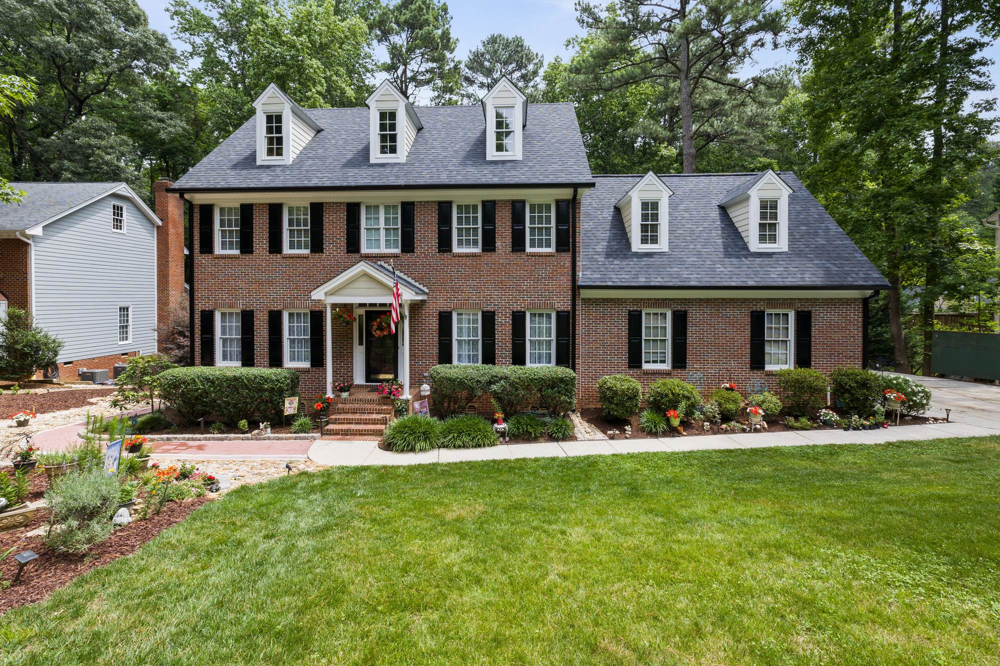
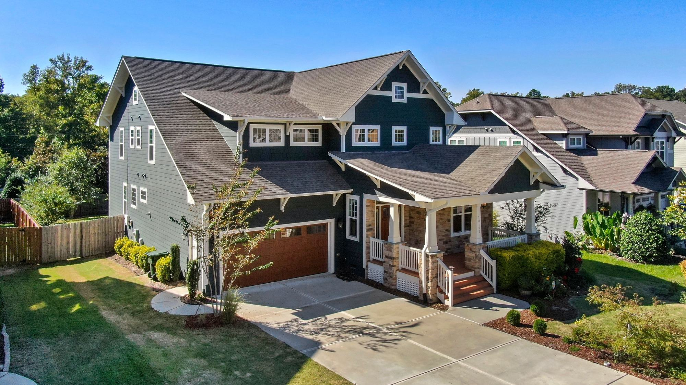
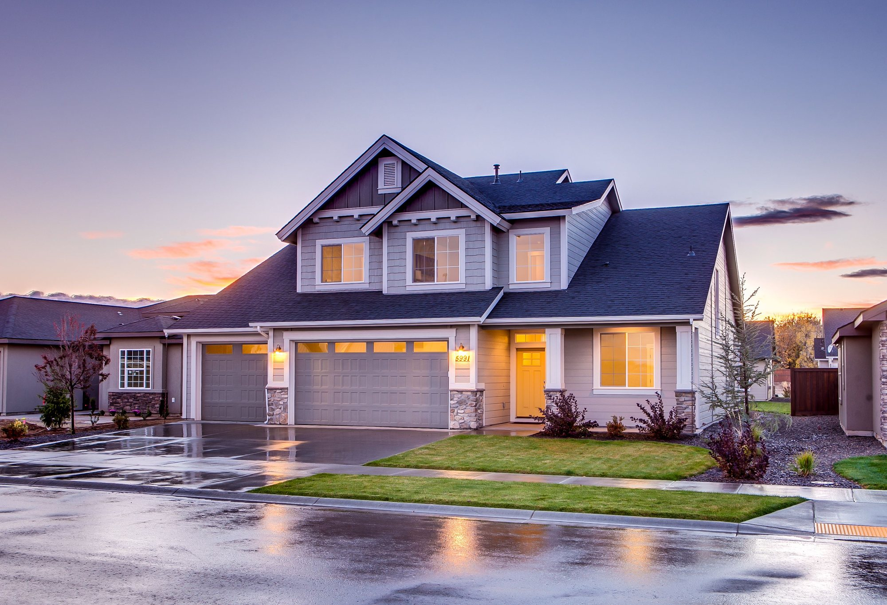
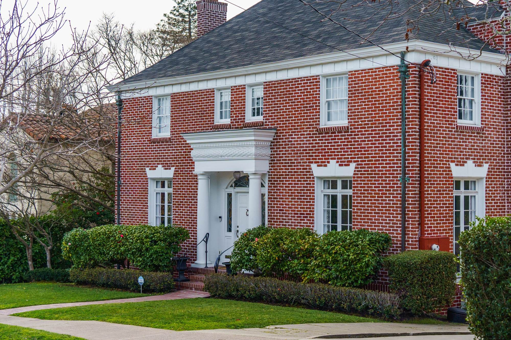
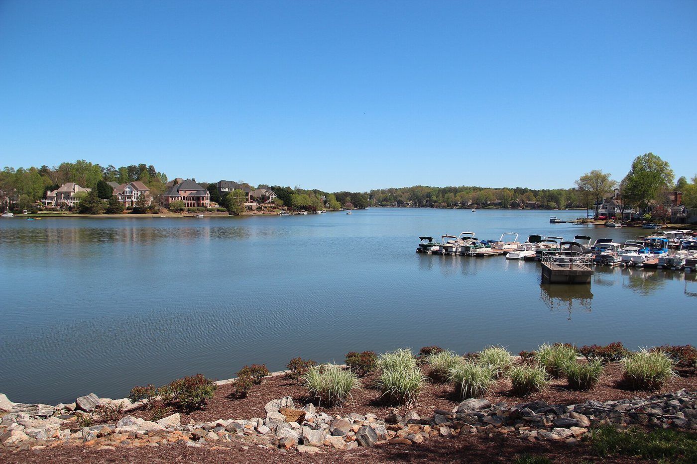

01

Forsyth County · Georgia
Live Cumming listings, saved searches by kind of home, and what to know about the county seat Sarah's office calls home.
Living in Cumming
Cumming is the county seat of Forsyth County and the only incorporated city in it, with Sawnee Mountain Preserve just north of town and Lake Lanier to the east.
Georgia first chartered the town in 1834. Its civic core sits around City Hall on Main Street, and Cumming City Center, west of downtown, adds an amphitheater, shops and a boardwalk trail. The city itself is small: most homes with a Cumming mailing address sit in unincorporated Forsyth County, which is worth knowing before you compare permits, utilities and taxes.
Living in Cumming and around Lake LanierJohns Creek, Alpharetta or Cumming?
At a glance
49mi
Hartsfield-Jackson Airport
39mi
Downtown Atlanta
15mi
Alpharetta
Driving miles from Cumming City Hall by OpenStreetMap routing, October 2026. Time on the road depends on traffic on GA 400.
The Lou Sobh Amphitheater, a reflection pool and a boardwalk over Kelly Mill Branch, west of downtown.
More than 11 miles of hiking just north of town, including the trail to the Indian Seats overlook.
A Forsyth County park on Lake Lanier with year-round boat access and a sandy swimming beach.
Home of the Cumming Country Fair & Festival, eleven days every October since 1995.
Search Cumming
Start with one of these searches, or browse the newest Cumming listings below. Every listing comes from the MLS through IDX Broker, updated as it changes.

01
02

03

04
Newest first

$1,195,000
4120 Sawnee Ridge Drive Cumming, GA 30040
5 beds · 4.5 baths · 4,860 sq ft
Listed by CENTURY 21 Results

$689,900
2235 Brannon Oaks Court Cumming, GA 30041
4 beds · 3 baths · 3,140 sq ft
Listed by CENTURY 21 Results

$574,500
6105 Shady Cove Lane Cumming, GA 30028
4 beds · 3 baths · 2,780 sq ft
Listed by CENTURY 21 Results

$849,000
905 Mary Alice Lane Cumming, GA 30041
5 beds · 4 baths · 3,920 sq ft
Listed by CENTURY 21 Results
Selling in Cumming? Get an instant home value, or read Sarah's guide to the best time to sell in Cumming.
Downtown, City Hall stands on Main Street, and the Cumming Schoolhouse on School Street, built in 1923, was named to the National Register of Historic Places in 2000. It now holds the School Street Playhouse and a historical society.
West of downtown, Cumming City Center sits between Canton Highway and Sawnee Drive, behind Forsyth Central High School: the Lou Sobh Amphitheater, a reflection pool, pocket parks and a boardwalk above Kelly Mill Branch. The city moved its Veterans War Memorial there in 2023, and every October the Cumming Fairgrounds host the eleven-day Country Fair & Festival.
Lake Lanier, formally Lake Sidney Lanier, is a U.S. Army Corps of Engineers reservoir on the Chattahoochee River. On the Cumming side, Mary Alice Park has year-round boat access, a sandy swimming beach, picnic areas and a pavilion.
Just north of town, Sawnee Mountain Preserve has more than 11 miles of hiking, including the routes to the Indian Seats overlook, and a visitor center on Spot Road. The Big Creek Greenway, a paved and boardwalk path, runs from Sawnee Mountain Preserve toward south Forsyth, with trailheads at Fowler Park, Bethelview Road and Union Hill Road.
Lake Lanier living near CummingSawnee Mountain's newest overlook
A few questions are worth settling before you write an offer on a Cumming home.
Day to day
School information is factual and by district. Always confirm a specific address in the district's school finder.
Questions
Forsyth County. Cumming is the county seat and the only incorporated city in the county.
No. The city itself is small, and most homes with a Cumming mailing address sit in unincorporated Forsyth County. Check where a home sits before you compare permits, utilities and taxes.
Forsyth County Schools. The district assigns schools by address, so confirm the zoned schools for a specific home on its site.
By road from Cumming City Hall, it is about 39 miles to downtown Atlanta and about 49 miles to Hartsfield-Jackson Atlanta International Airport, mostly on GA 400.
Resources
Nearby

Explore
Explore
Explore
Let's Talk
Sarah's office is on Ronald Reagan Boulevard in Cumming. Tell her what you are looking for, and she will set up a search or walk you through a neighborhood.